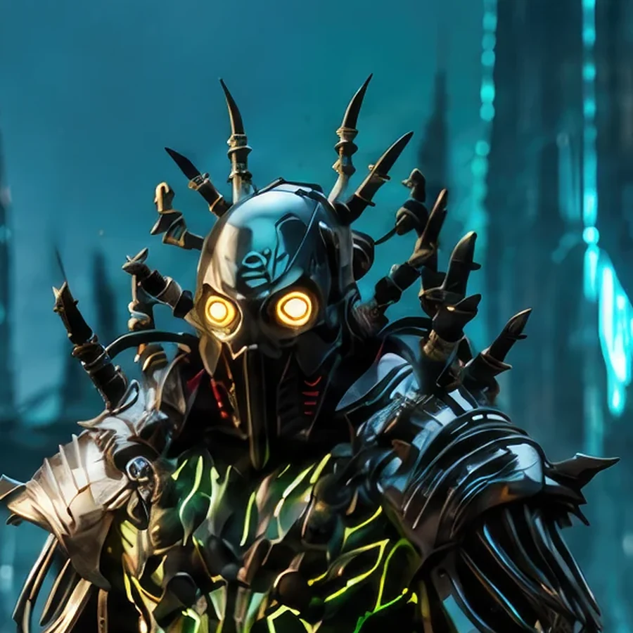

Field Observation
Ercano activated a red alien orb embedded in the left wall of an Earth 1 structure. The embedded orb anchors hostile alien systems within the transformed structure.
 ©
©
GENEZYS ARCHIVE · Synthbot
Titan Strategist
Identity & combat record
Archive node 01 / 04

Archive record
Ercano plans battles the way the Syndicate plans everything: as an equation where every loss is accounted for. The Energy Vortex pulls the strength out of every enemy at once and pierces them while they are empty. Ercano's pilot has never lost a battle that was worth winning.
Combat signature
Generates swirling power maelstrom: Reduces all enemies' Cosmara to 100 for 1 turn and deals 70 pierce damage to all.
Genezys 04:08 ™&©2026LEGIONS
Field intelligence
Archive node 02 / 04
FIELD REPORT // HOSTILE ORB NODE

Mission successfulAdditional intelligence available
Field Observation
Ercano activated a red alien orb embedded in the left wall of an Earth 1 structure. The embedded orb anchors hostile alien systems within the transformed structure.
Environment
Object Analysis
Key Findings
Restricted visual records
Archive node 03 / 04


Motion archive
Archive node 04 / 04
Motion record not yet recovered